DAW · curso 3
5. Servlets · DAW
5.1 Aplicaciones web en Java
| Concepto | Definición |
|---|---|
| Sitio web | Conjunto de páginas web almacenadas en un servidor y relacionadas por contenido. Usa principalmente tecnologías front-end: HTML, CSS y JS. |
| Aplicación web | Conjunto de páginas generadas en respuesta a peticiones del usuario, normalmente mediante formularios. Requiere front-end y back-end. |
| Página HTML estática | Página almacenada en el servidor cuyo contenido no depende de la llamada. |
| Página HTML dinámica | Página generada en el servidor cuyo contenido puede depender de la llamada. |
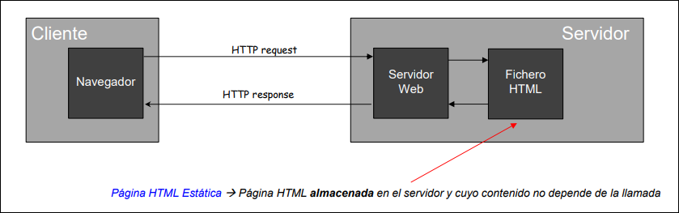
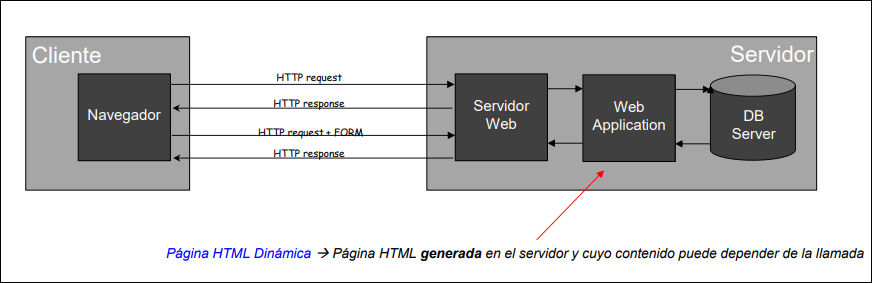
Para desarrollar aplicaciones web en Java se usa Java EE / Jakarta EE, una especificación construida sobre Java SE.
Elementos necesarios:
| Elemento | Incluye o aporta |
|---|---|
| JDK | Compilador de Java, clases core y JRE. |
| APIs Java EE/Jakarta EE | Servlets, JSP, JSF, JPA, EJB, etc. |
Definiciones útiles:
| Concepto | Papel habitual |
|---|---|
| Servlet | Clase Java gestionada por el contenedor web; atiende HTTP y suele actuar como controlador. |
| JSP | Java Server Pages: página HTML con etiquetas y fragmentos Java que el servidor traduce a un servlet; suele actuar como vista. |
| JavaBean | Clase reutilizable con constructor vacío, atributos privados y get/set; encapsula datos o lógica sencilla del modelo. |
Enfoques habituales:
| Enfoque | Nivel | Control sobre HTML/CSS/JS |
|---|---|---|
| Servlets + JSP | Bajo nivel; hace poco trabajo por el programador. | Alto control. |
| JSF | Alto nivel; delega mucho trabajo. | Menor control. |
| Frameworks como Spring o Struts | Alto nivel; delegan trabajo. | Alto control. |
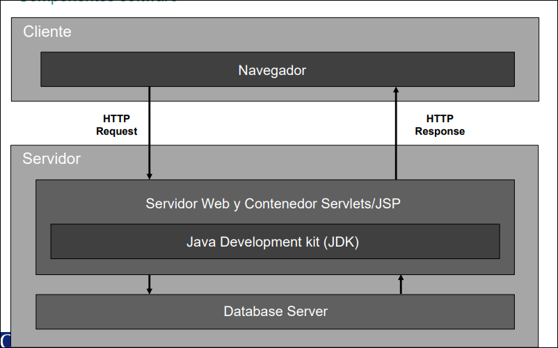
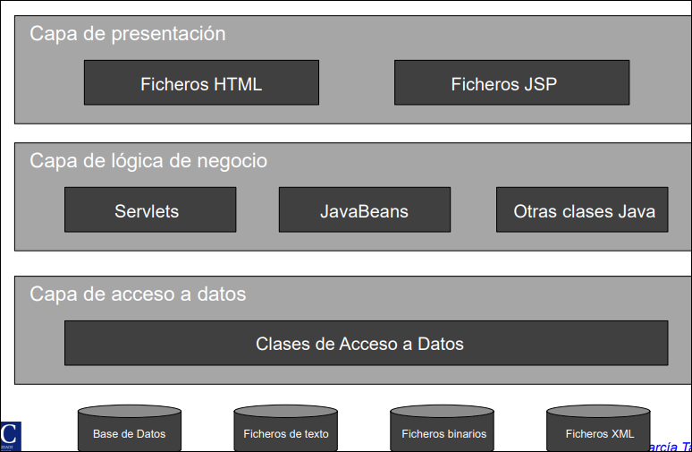
MVC
MVC (Modelo-Vista-Controlador) es un patrón introducido por Trygve Reenskaug en 1979.
| Parte | Responsabilidad |
|---|---|
| Modelo | Datos, lógica de negocio, acceso a datos, reglas de negocio y funciones de base de datos. |
| Vista | Interfaz de usuario y presentación de datos. |
| Controlador | Intermediario: recibe entradas, las procesa, actualiza modelo y decide la vista. |
Flujo MVC general:
- El usuario interactúa con la vista.
- El controlador procesa la acción.
- El modelo actualiza los datos.
- La vista se actualiza y muestra la información.
En Java web clásico:
- Servlet = controlador.
- JSP/HTML = vista.
- JavaBeans, DAOs y clases de negocio = modelo.
Flujo web con Java:
- El usuario solicita una URL mediante un objeto
request. - El servlet controlador atiende la solicitud.
- El controlador obtiene datos del modelo.
- Añade datos a
requesto prepararesponse. - La vista muestra los datos mediante HTML/JSP.
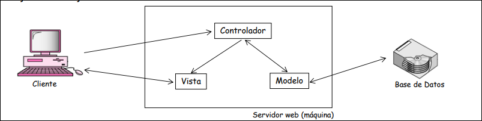
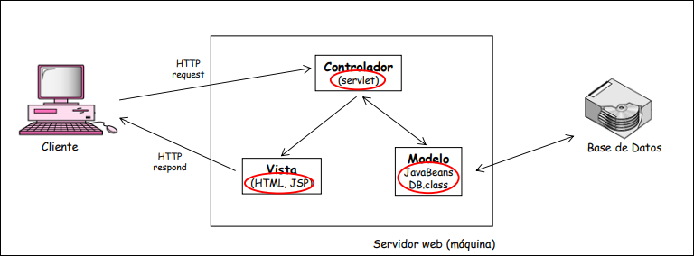
5.2 Qué es un servlet
Un contenedor web es la interfaz entre un componente y el sistema inferior que lo soporta. Gestiona ciclo de vida, peticiones, objetos request/response, mapeo de URLs y ejecución dentro del servidor. Ejemplos: Tomcat o Jetty.
Un servlet es un programa Java que se ejecuta en el contenedor web de un servidor de aplicaciones y es invocado por un cliente mediante HTTP.
Características:
- independiente de plataforma, al estar escrito en Java;
- se carga en memoria la primera vez y en peticiones posteriores se usan hilos;
- consume menos recursos que CGI;
- está precompilado;
- se ejecuta dentro de la JVM, con excepciones y seguridad Java;
- es portable y seguro;
- es invisible para el cliente: el navegador no necesita Java.
Idea práctica importante: normalmente existe una instancia del servlet y varias peticiones concurrentes la usan con hilos; por eso no se debe guardar estado mutable de usuario en atributos de instancia.
API Servlet
Desde el punto de vista del código, un servlet pertenece a la API Java Servlet e implementa la interfaz Servlet.
| Paquete clásico | Contenido |
|---|---|
javax.servlet |
Clases e interfaces genéricas, independientes del protocolo. |
javax.servlet.http |
Clases e interfaces específicas para HTTP. |
En versiones actuales se usa jakarta.servlet y jakarta.servlet.http.
Jerarquía habitual:
| Elemento | Papel |
|---|---|
Servlet |
Interfaz base. |
GenericServlet |
Implementa servicio genérico, no limitado a HTTP. |
HttpServlet |
Especialización para HTTP; hereda de GenericServlet. |
| Clase propia | Servlet escrito por el desarrollador. |
Los métodos del ciclo de vida y de petición los invoca el contenedor, no el programador.
5.3 Ciclo de vida y procesamiento de peticiones
Ciclo de vida
| Método | Cuándo se ejecuta | Uso |
|---|---|---|
init(ServletConfig) |
Una vez, cuando el servidor arranca o inicializa el servlet. | Inicializar recursos. |
service(request, response) |
En cada petición. | Crear la respuesta; en HTTP despacha hacia doGet(), doPost(), etc. |
destroy() |
Una vez, antes de apagar o descargar el servlet. | Cerrar conexiones, liberar memoria. |
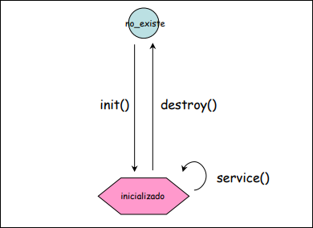
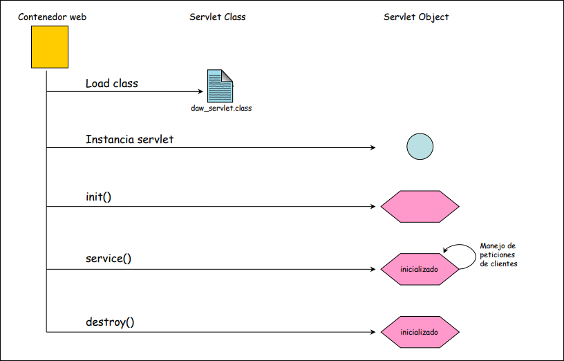
Cómo maneja el contenedor una petición
- El usuario hace clic en una URL asociada a un servlet.
- El contenedor comprueba si la petición es para un servlet.
- Crea objetos
HttpServletRequestyHttpServletResponse. - Encuentra el servlet correcto según la URL, usando
web.xmlo anotaciones. - Crea un hilo para la petición y le pasa
requestyresponse. - Ejecuta
doGet()odoPost(). - El hilo termina.
- El contenedor convierte
responseen respuesta HTTP y la devuelve al cliente. - El contenedor elimina los objetos de petición y respuesta.
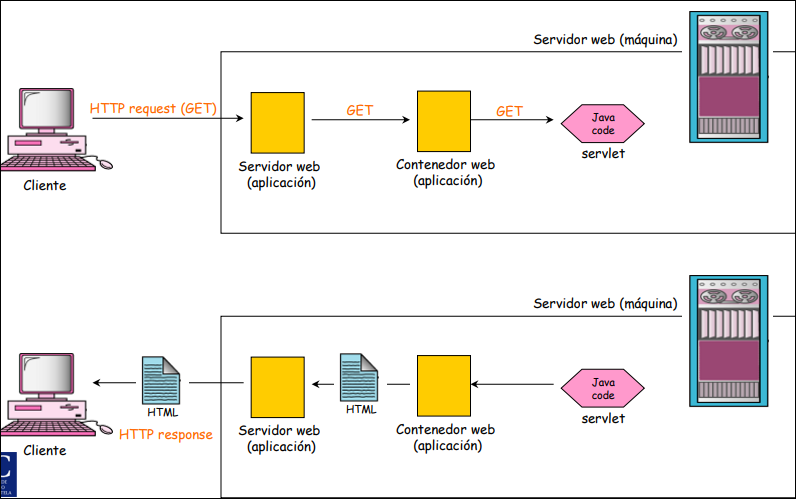
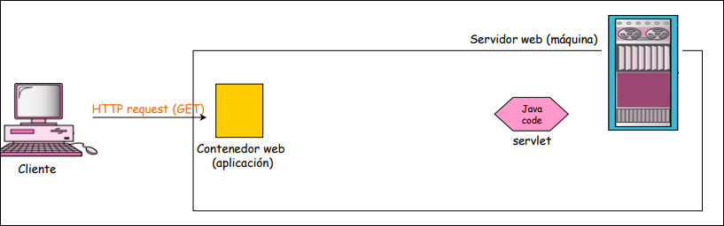
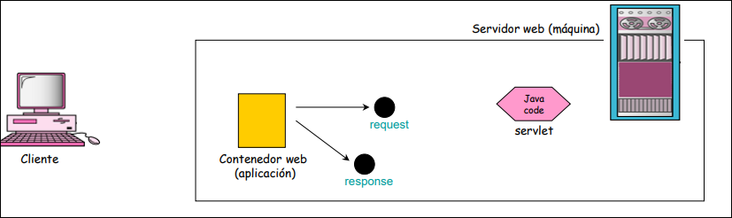
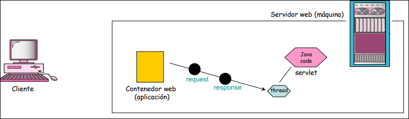
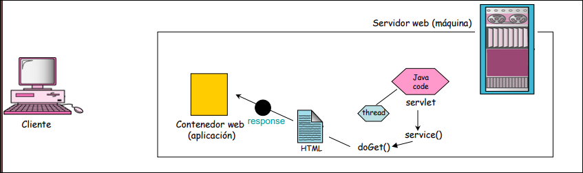
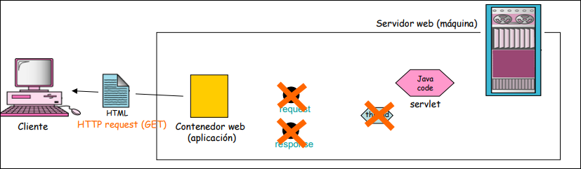
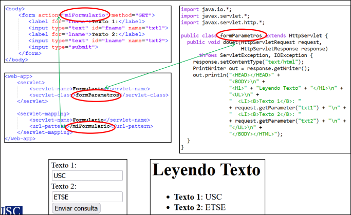
Métodos principales
GenericServlet:
| Método | Uso |
|---|---|
getServletConfig() |
Configuración de arranque pasada a init(). |
getServletContext() |
Contexto de la aplicación. |
getInitParameter(nombre) |
Valor de un parámetro de inicialización. |
getInitParameterNames() |
Nombres de parámetros disponibles. |
getServletInfo() |
Información general: autor, versión, copyright, etc. |
log(mensaje) |
Escribe en el log del servidor. |
log(mensaje, excepcion) |
Escribe mensaje y traza de error. |
HttpServlet:
| Método | Uso |
|---|---|
doGet(request, response) |
Atiende GET. |
doPost(request, response) |
Atiende POST. |
doHead(request, response) |
Como GET, pero solo devuelve cabeceras. |
doOptions(request, response) |
Indica métodos permitidos en la URL. |
doPut(request, response) |
Atiende PUT. |
doTrace(request, response) |
Devuelve la misma petición recibida. |
doDelete(request, response) |
Atiende DELETE. |
getLastModified(request) |
Fecha en milisegundos del último cambio del recurso. |
5.4 HttpServletRequest y HttpServletResponse
HttpServletRequest encapsula datos enviados por el cliente. HttpServletResponse encapsula datos enviados por el servidor al cliente.
HttpServletRequest
| Método | Uso |
|---|---|
getAttribute(nombre) |
Valor de un atributo guardado en la petición. |
getParameter(nombre) |
Valor enviado por URL o formulario. |
getParameterNames() |
Nombres de parámetros enviados. |
getMethod() |
Método HTTP usado. |
getContentLength() |
Tamaño exacto en bytes del cuerpo. |
getInputStream() |
Canal de entrada byte a byte. |
getLocalPort() |
Puerto del servidor por el que entró la petición. |
getContextPath() |
Parte de la URL que identifica la aplicación. |
getHeader(nombre) |
Cabecera enviada por el navegador. |
getQueryString() |
Parte de la URL posterior a ?. |
getSession() |
Sesión actual, o creación de una nueva. |
getCookies() |
Cookies enviadas por el navegador. |
HttpServletResponse
| Método | Uso |
|---|---|
getOutputStream() |
Salida binaria. |
getWriter() |
PrintWriter para texto o HTML. |
sendError(codigo) |
Interrumpe y envía error HTTP estándar. |
setStatus(codigo) |
Establece código HTTP sin interrumpir la generación. |
getBufferSize() |
Tamaño del buffer. |
setContentType(tipo) |
Tipo de contenido enviado. |
addCookie(cookie) |
Ordena guardar una cookie. |
addHeader(nombre, valor) |
Añade cabecera técnica. |
encodeRedirectURL(url) |
Incrusta ID de sesión en URL si es necesario. |
getWriter() se usa para texto; getOutputStream() para datos binarios.
5.5 Estructura de aplicación y configuración
Estructura clásica
miAplicacion/
├── index.html
├── css/
├── img/
└── WEB-INF/
├── web.xml
├── classes/
└── lib/
Ideas:
WEB-INFno es accesible directamente por URL.classes/contiene clases compiladas.lib/contiene.jar.web.xmles el descriptor de despliegue.
Estructura Maven
proyecto/
├── pom.xml
└── src/
├── main/
│ ├── java/
│ ├── resources/
│ └── webapp/
│ └── WEB-INF/
└── test/
Maven automatiza dependencias, compilación y empaquetado .war. Esta información no aparece tan desarrollada en el PDF, pero es útil para proyectos actuales.
web.xml y anotaciones
Tradicionalmente se configuraba el servlet en web.xml con <servlet>, <servlet-name>, <servlet-class>, <servlet-mapping> y <url-pattern>.
Desde Servlet 3.0 (2009) se puede usar @WebServlet, moviendo parte de la configuración al código Java:
web.xml |
@WebServlet |
Descripción |
|---|---|---|
<servlet-name> |
name |
Nombre del servlet. |
<url-pattern> |
urlPatterns |
Array de URLs que activan el servlet. |
<url-pattern> |
value |
Igual que urlPatterns, pero para un solo valor. |
<init-param> |
initParams |
Parámetros de inicialización con @WebInitParam(name="...", value="..."). |
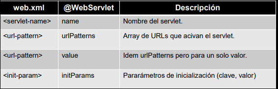
@Override es otro ejemplo de anotación Java, usada para evitar errores al sobrescribir métodos.
Conclusión:
- las anotaciones reducen XML;
- en aplicaciones complejas puede seguir usándose
web.xml; - las anotaciones incrementan dependencia de librerías externas si no se gestionan bien;
- los gestores de proyectos automatizan descarga de dependencias, versiones y empaquetado
.war; - frameworks modernos suelen apoyarse en gestores de proyectos.
5.6 Parámetros, contexto y atributos
Un parámetro es un dato String de configuración. Evita recompilar código para cambiar valores.
Parámetros de inicialización
| Aspecto | Idea |
|---|---|
| Dónde se definen | <init-param> dentro de <servlet>. |
| Alcance | Un servlet. |
| Objeto de acceso | ServletConfig. |
| Inicialización | ServletConfig config = getServletConfig(). |
| Métodos | getInitParameter(nombre), getInitParameterNames(), getServletName(), getServletContext(). |
Parámetros de contexto
| Aspecto | Idea |
|---|---|
| Dónde se definen | <context-param> dentro de <web-app>. |
| Alcance | Toda la aplicación. |
| Objeto de acceso | ServletContext. |
| Inicialización | getServletContext() o getServletConfig().getServletContext(). |
| Métodos | getInitParameter(nombre), getInitParameterNames(), setAttribute(), getAttribute(), removeAttribute(). |
ServletConfig vs ServletContext
| Aspecto | ServletConfig |
ServletContext |
|---|---|---|
| Alcance | Un servlet. | Toda la aplicación. |
| Instancias | Una por servlet. | Una por aplicación. |
| Inicializado por | Contenedor al crear el servlet. | Contenedor al desplegar la aplicación. |
| Parámetros | <init-param> dentro de <servlet>. |
<context-param> dentro de <web-app>. |
| Acceso | getServletConfig(). |
getServletContext(). |
Flujo:
- Despliegue de la aplicación.
- Creación de
ServletContext. - Carga de
<context-param>. - Creación de cada servlet.
- Creación de su
ServletConfig. - Llamada a
servlet.init(config).
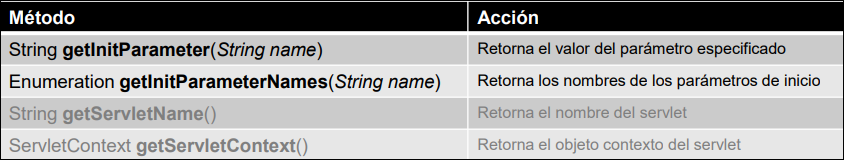
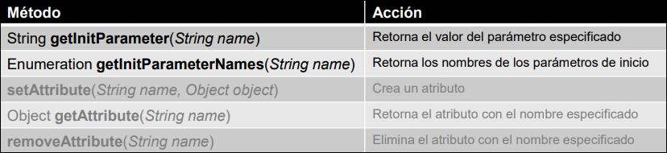
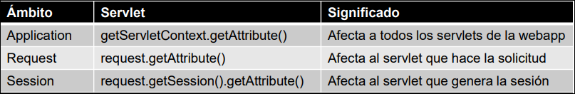
Atributos
Un atributo es un objeto con nombre, valor y periodo de validez que se almacena en memoria del servidor para compartir información entre componentes.
| Ámbito | Acceso | Significado |
|---|---|---|
| Aplicación | getServletContext().getAttribute() |
Afecta a todos los servlets de la web. |
| Petición | request.getAttribute() |
Afecta a la petición actual. |
| Sesión | request.getSession().getAttribute() |
Afecta al usuario de esa sesión. |
Métodos comunes:
getAttribute(nombre);setAttribute(nombre, objeto);removeAttribute(nombre);getAttributeNames().
Resumen: parámetros = configuración, atributos = datos compartidos en ejecución.
5.7 Construcción de respuesta y redirección
Cuando un servlet toma el control puede:
- implementar directamente la respuesta con
PrintWriter; - pasar el control a otro recurso con
RequestDispatcher; - redirigir al navegador con
HttpServletResponse.
PrintWriter
PrintWriter devuelve cadenas de texto al navegador:
- inicialización:
PrintWriter wr = response.getWriter(); print(string);println(string).
Mezcla lógica y presentación, por eso en aplicaciones medias suele preferirse JSP como vista.
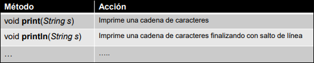
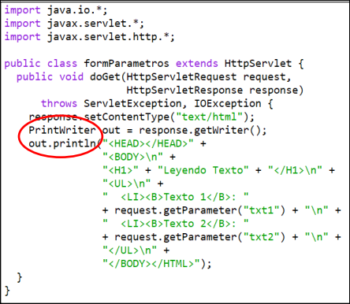
RequestDispatcher
Permite enviar la solicitud a otro recurso del mismo servidor: HTML, servlet o JSP.
- inicialización:
RequestDispatcher rd = request.getRequestDispatcher(resource); forward(request, response): reenvía la petición y pasa el control;include(request, response): incluye contenido en la respuesta y no pierde el control;requestyresponsepueden ser modificados por ambos recursos.
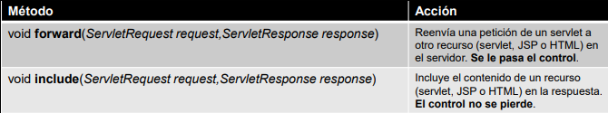
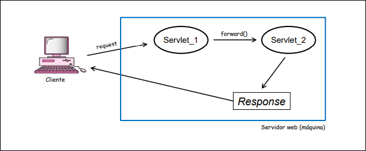
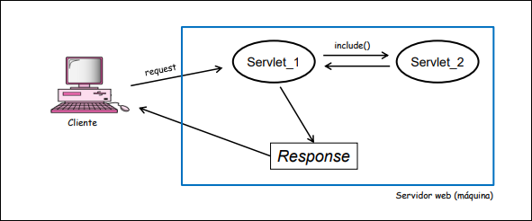
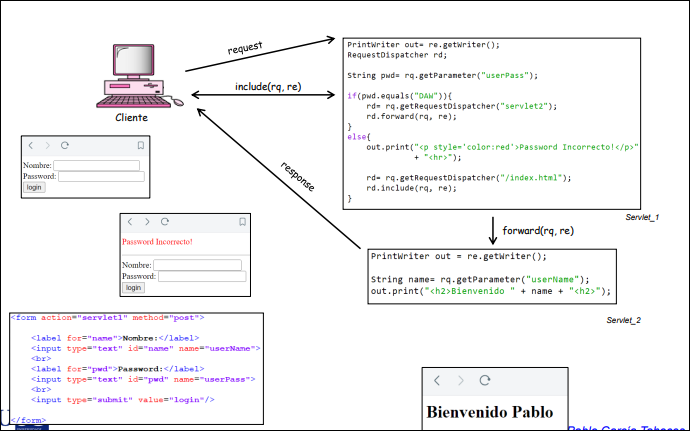
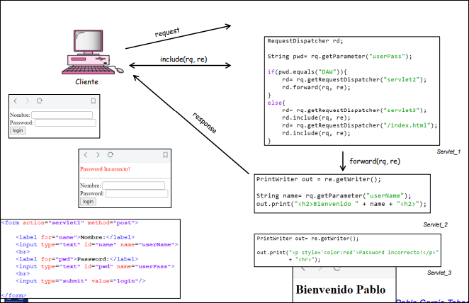
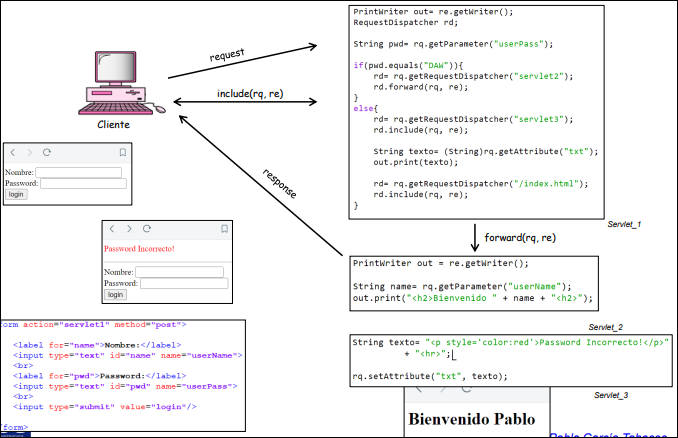
sendRedirect()
response.sendRedirect(resource) redirige la respuesta a otro recurso. Acepta URLs relativas o absolutas y genera una nueva petición HTTP, con nuevos objetos request y response.
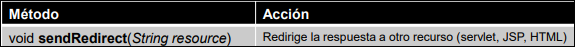
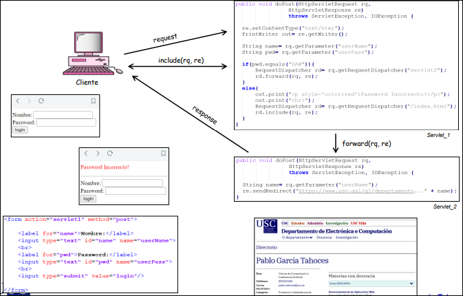
forward() |
sendRedirect() |
|---|---|
| Se ejecuta en el servidor. | Se ejecuta desde el cliente. |
Conserva los mismos request y response. |
Genera nueva solicitud. |
| Solo puede usarse con recursos del servidor. | Puede apuntar dentro o fuera del servidor. |
| La URL del navegador no cambia. | La URL del navegador cambia. |
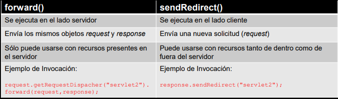
5.8 Sesiones y seguimiento de estado
HTTP es un protocolo sin estado: cada petición se trata de forma independiente. El servidor no sabe por sí mismo si dos peticiones pertenecen al mismo cliente ni si están relacionadas.
Una sesión permite identificar y guardar información individual de cada cliente. Empieza con una petición y puede terminar por cierre, inactividad o métodos de fin de sesión.
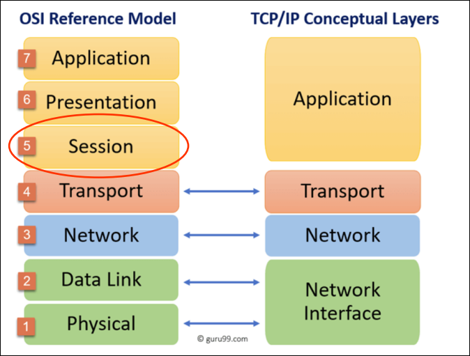
Mecanismos de seguimiento de sesión
| Mecanismo | Ventajas | Inconvenientes | Situación actual |
|---|---|---|---|
| Campos ocultos | No dependen de cookies; funcionan con formularios. | Manuales, difíciles de mantener, requieren formularios, solo texto. | Obsoleto. |
| Reescritura de URL | No depende de cookies, no necesita formularios, encodeURL() puede automatizar. |
Solo enlaces, URLs largas, problemas de seguridad, SEO y caché. | Respaldo. |
| Cookies | No ensucian URL, más estándar y transparente. | Pueden rechazarse, privacidad, tamaño limitado, mantenimiento. | Muy habitual. |
HttpSession |
Fácil, integrada, gestiona cookies y reescritura. | Consumo de memoria y problemas de escalabilidad si se gestiona mal. | Recomendada. |
Campos ocultos
Consiste en almacenar información en un campo hidden de un formulario y recuperarla con request.getParameter().
<input type="hidden" name="id" value="123">
Reescritura de URL
Añade un token o identificador a la URL del siguiente recurso:
url?name1=value1&name2=value2
Se recupera con getParameter(). Puede automatizarse con response.encodeURL(), y HttpSession la soporta como respaldo.
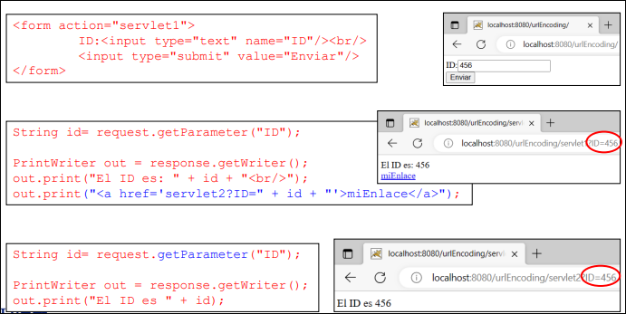
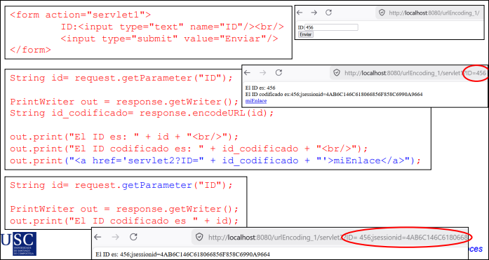
Cookies
Una cookie es un fragmento de información almacenado en el cliente a petición del servidor. El navegador la devuelve en solicitudes posteriores.
Métodos:
| Método | Uso |
|---|---|
new Cookie(nombre, valor) |
Crea cookie. |
response.addCookie(cookie) |
Envía cookie al cliente. |
getName() / setName() |
Nombre. |
getValue() / setValue() |
Valor. |
getMaxAge() / setMaxAge(segundos) |
Tiempo máximo; negativo implica cookie de sesión. |
getDomain() / setDomain() |
Dominio válido. |
getSecure() |
true si solo viaja por HTTPS. |
setPath(ruta) |
Restringe uso a una ruta. |
HttpSession
HttpSession deja que el contenedor cree un identificador de sesión, normalmente mediante la cookie predefinida JSESSIONID, y mantenga el estado automáticamente.
Inicialización:
request.getSession()orequest.getSession(true): devuelve sesión actual o crea una nueva;request.getSession(false): devuelve sesión actual, pero no crea una si no existe.
Métodos:
| Método | Uso |
|---|---|
setAttribute(nombre, valor) |
Guarda dato en sesión. |
getAttribute(nombre) |
Recupera dato. |
removeAttribute(nombre) |
Elimina dato. |
getId() |
Identificador único. |
isNew() |
true si acaba de crearse y el navegador aún no la conoce. |
invalidate() |
Destruye la sesión y sus atributos. |
getServletContext() |
Contexto global de la aplicación. |
getCreationTime() |
Fecha/hora de creación. |
getLastAccessedTime() |
Último acceso del cliente. |
getMaxInactiveInterval() / setMaxInactiveInterval(segundos) |
Tiempo máximo de inactividad. |
Finalización:
- en
web.xmlcon<session-config><session-timeout>X</session-timeout></session-config>; - con
session.setMaxInactiveInterval(segundos); - con
session.invalidate().
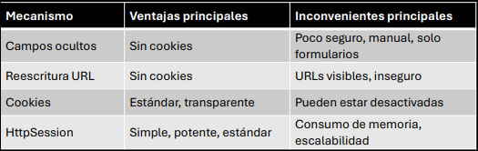
5.9 Evolución de Servlets y migración a Jakarta
| Versión | Año | Novedades |
|---|---|---|
| Servlet 3.0 | 2009 | Anotaciones, asíncrono, pluggability, menos XML. |
| Servlet 3.1 | 2013 | Soporte WebSocket, mejoras asíncronas, NonBlocking IO. |
| Servlet 4.0 | 2017 | HTTP/2 y Server Push. |
| Servlet 5.0 | 2020 | Migración a Jakarta EE, mejoras de seguridad, compatibilidad con Jakarta EE 9, limpieza de APIs antiguas. |
| Servlet 6.0 | 2022 | Alta compatibilidad con HTTP/2, mejoras en headers, optimizaciones cloud-native. |
De javax a jakarta
En 2017, Oracle donó Java EE a la comunidad mediante la Fundación Eclipse, pero conservó la marca Java y prohibió modificar el paquete javax.
Consecuencia:
- se crea el paquete
jakarta; - Jakarta EE 9 introduce el cambio de nombre sin añadir nuevas funciones;
- antes:
javax.servlet.*; - ahora:
jakarta.servlet.*.
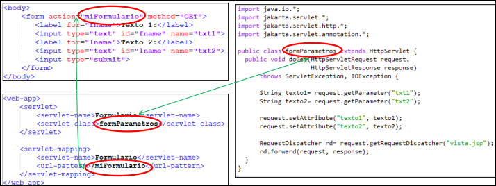
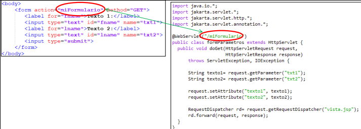
La documentación antigua puede seguir usando javax, pero en entornos actuales se trabaja con jakarta.
5.10 Ideas que no se deben confundir
| No confundir | Diferencia |
|---|---|
| Servlet vs HTML | El servlet es código Java del servidor; HTML es la respuesta o vista. |
| Servlet vs navegador | El servlet vive en el contenedor web, no en el navegador. |
request vs response |
request es lo que llega del cliente; response es lo que se devuelve. |
| Parámetro vs atributo | Parámetro es configuración o dato textual enviado; atributo es objeto compartido en ejecución. |
forward() vs sendRedirect() |
forward() reenvía internamente; sendRedirect() crea nueva petición del cliente. |
| Sesión vs cookie | La sesión se mantiene en servidor; la cookie suele transportar el identificador. |
5.11 Plantilla compacta de examen
Si piden una aplicación web con servlets, JSP y web.xml, una estructura MVC típica es:
src/main/java/daw/
├── model/UsuarioBean.java
└── web/
├── InicioServlet.java
├── LoginServlet.java
├── ListadoServlet.java
└── LogoutServlet.java
src/main/webapp/WEB-INF/
├── jsp/login.jsp
├── jsp/panel.jsp
└── web.xml
Roles:
| Elemento | Papel |
|---|---|
UsuarioBean |
Bean de datos: constructor vacío, atributos privados, getters/setters. |
InicioServlet |
doGet(): hace forward() a login.jsp. |
LoginServlet |
doPost(): lee formulario con getParameter(), valida, guarda usuario en session o vuelve al login con atributo de error. |
ListadoServlet |
doGet(): comprueba sesión, carga datos en request y hace forward() a panel.jsp. |
LogoutServlet |
doGet(): recupera sesión con getSession(false), invalida y redirige a inicio. |
web.xml |
Mapea URLs como /inicio, /login, /listado, /logout y puede configurar session-timeout. |
Flujo que debes saber explicar:
/inicioentra enInicioServlet.InicioServlethaceforward()alogin.jsp.- El formulario envía
POSTa/login. LoginServletvalida.- Si es correcto, guarda
UsuarioBeanensessiony hacesendRedirect()a/listado. ListadoServletcomprueba sesión, carga datos enrequesty haceforward()apanel.jsp.panel.jspmuestra usuario y datos.LogoutServletinvalida sesión y redirige a/inicio.
Patrones de código que suelen bastar:
request.getRequestDispatcher("/WEB-INF/jsp/login.jsp").forward(request, response);
String nombre = request.getParameter("nombre");
request.getSession().setAttribute("usuario", usuario);
response.sendRedirect(request.getContextPath() + "/listado");
HttpSession session = request.getSession(false);
if (session != null) session.invalidate();
La parte JSP de este flujo queda desarrollada en el tema 6. JSP.